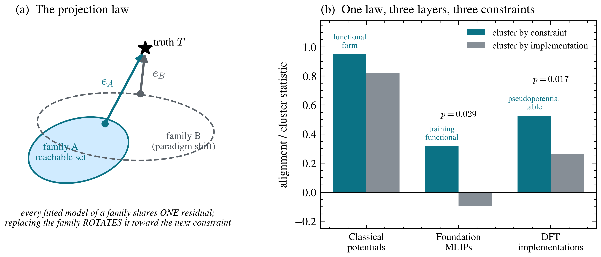
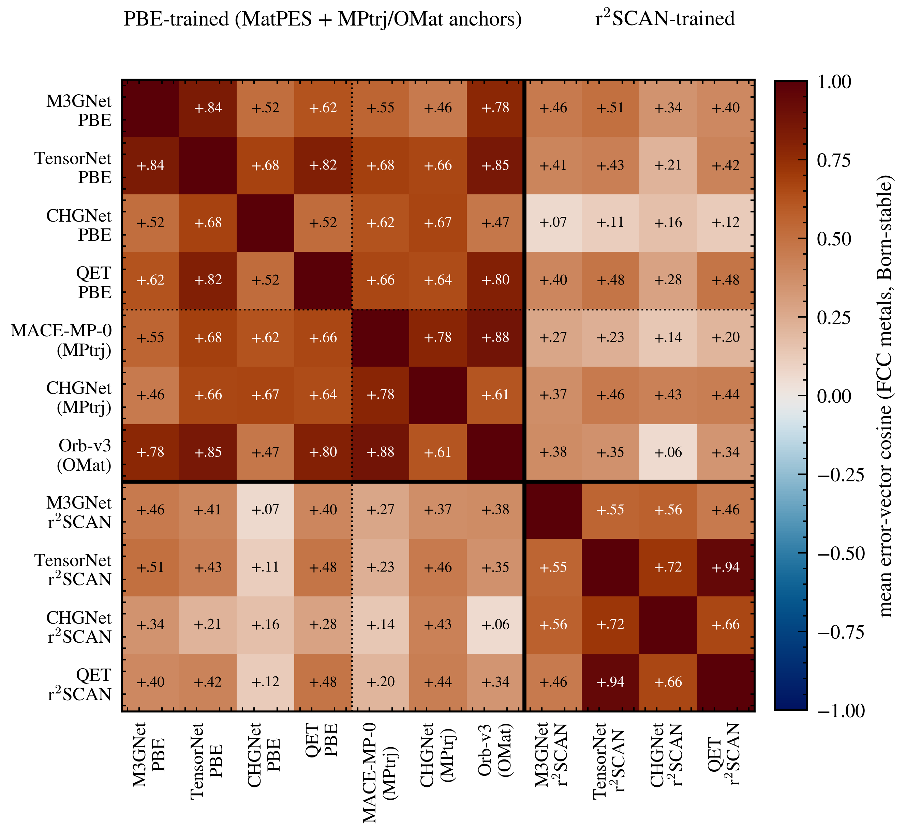
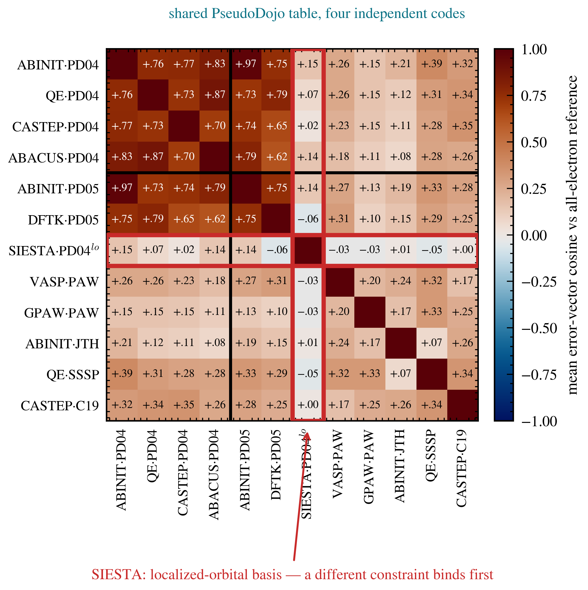
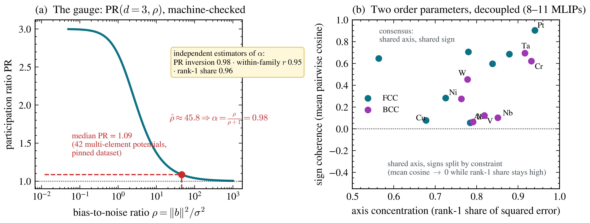
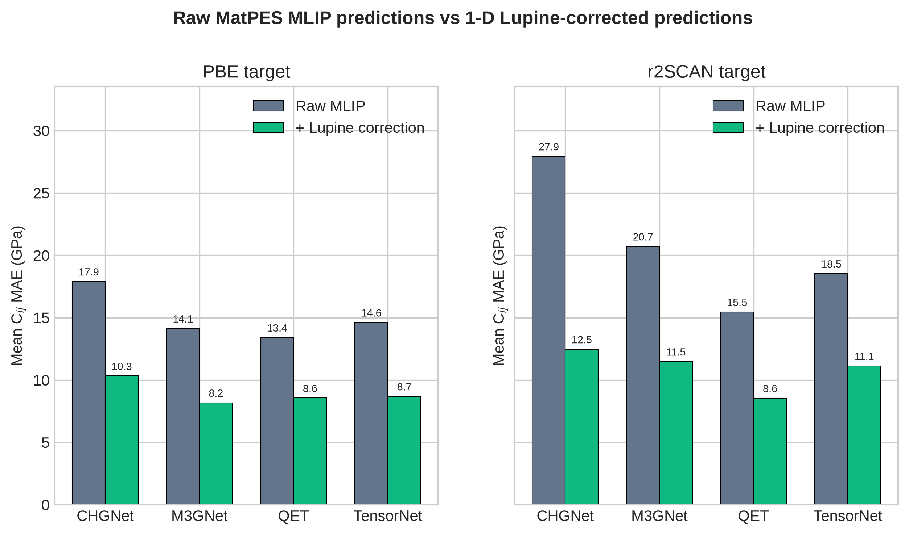
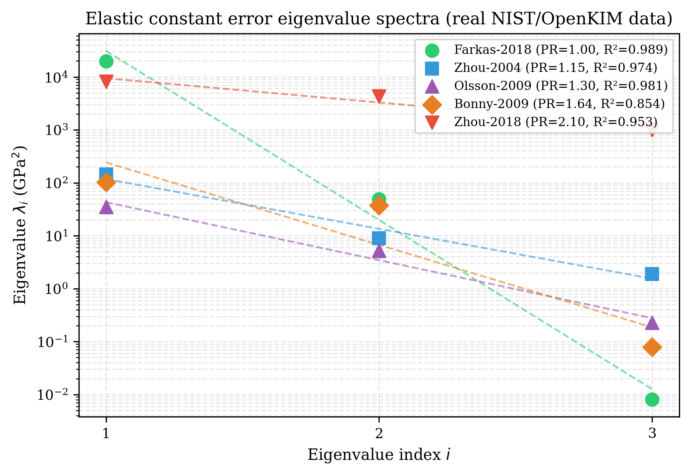
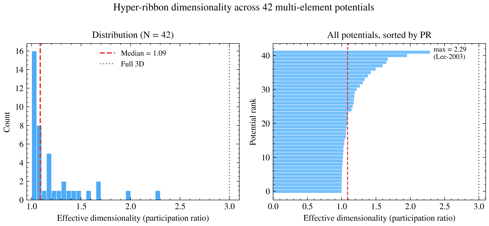
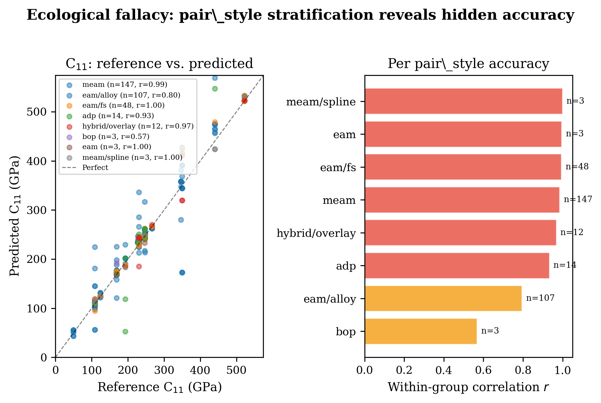

The empirical discovery, the law it revealed, and the corrected benchmark that tests the law on modern foundation MLIPs — distributed as working papers with a public replication kit, three pre-registrations, and a machine-checked theory core. Failures reported as failures.
This page is the web edition; use your browser's Print for a clean paper copy, or download the typeset PDFs below.
Working paper · June 2026 · theory, two pre-registered factorial experiments, replication kit
When many independently constructed models agree, the agreement is routinely read as confidence. We formalize and test the opposite reading: a model family is a projection operator, fitting drives every member toward the point of the family's reachable set nearest the truth, and the shared residual — one direction in observable space — is a fingerprint of whatever constraint binds the family. The theory core is machine-checked (Lean 4, zero unproven obligations): normal-cone consensus theorem; participation-ratio gauge; ribbon/consensus decoupling; affine decomposition of closed affine reachable sets; local normal-cone theorem for $C^1$ smooth non-convex immersions; and Hoeffding concentration of the empirical second-moment matrix used by the gauge. We then test the law's sharpest consequence — errors organize by constraint, not by implementation — with pre-registered factorial experiments at three layers of one epistemic stack: classical interatomic potentials, foundation machine-learned potentials (4 architectures × 2 training functionals), and DFT implementations (12 methods, 384 crystals). A complete 3×3×3 supercell benchmark on 16 cubic metals shows that a single 1-D correction direction per functional lowers the foundation-MLIP mean MAE from 17.84 GPa to 9.92 GPa with zero no-harm violations. Each experiment carried an explicit refutation condition; none was triggered, and four of seven registered predictions failed and are reported as failures. The anisotropy persists at every layer — median participation ratio 1.09, ~1.3, and 1.10 out of 3 — while its direction rotates to the next constraint upstream.





Working paper · June 2026 · 16 cubic metals, 4 foundation potentials, 2 functionals, 128 cases
We present a complete 3×3×3 supercell reference benchmark of cubic-metal elastic constants for four MatPES foundation machine-learned interatomic potentials — CHGNet, M3GNet, QET, and TensorNet — on 16 elements under PBE and approximate r2SCAN targets. The full 128-case matrix costs less than one CPU core-hour. The uncorrected mean Cij MAE is 17.84 GPa. Applying the Lupine distillation engine as a post-hoc correction layer — a single first-principal-component bias vector per functional, projected onto each residual — lowers the mean MAE to 9.92 GPa. The correction improves every model on both functionals and satisfies the no-harm guarantee on every case. The remaining ~10 GPa error is concentrated in magnetic and refractory BCC transition metals and in the approximate r2SCAN target, identifying the chemistry-specific errors the next generation of models and training data must address.
Hyper-Ribbon Universality and Why Pooled Benchmarks Mislead · Working paper · June 2026
Prediction errors are not noise. Across 559 interatomic potentials and forty years of development — pair potentials through embedded-atom methods to modern functional forms — elastic-constant errors universally occupy low-dimensional hyper-ribbon manifolds (effective dimensionality 1.0–2.3 out of 3, median 1.09), and the geometry has not moved while accuracy improved: the sloppy-model universality class, observed for the first time in cross-model error space rather than single-model parameter space. The methodological consequence is sharp: between-element heterogeneity is extreme (I² = 98.6%), pooled benchmarks misstate model accuracy (within-family correlation 0.95 vs 0.82 pooled), and the paper demonstrates the repair — stratified evaluation with random-effects meta-analysis. The paper also audits itself: an apparent element-level electronic-structure signal is traced to a fitting-depth confounder, and a Born-screened extension to three foundation MLIPs (with mechanical-stability failures reported, not hidden) provides the proof-of-concept the companion law paper develops. Crystal-structure-dependent correlation patterns are reported among the empirical findings.



All three papers are working papers, in preparation — not yet submitted to any venue. Every headline statistic is verifiable from committed raw data: the replication kit (commit-versioned, public) runs Tier 1 verification with NumPy alone in seconds (python tier1_analyze.py) and re-derives the raw elastic constants from public model checkpoints in Tier 2. The 3×3×3 MatPES benchmark is reproducible from lupine/data/aggregate_layer2.py and the raw Cloud Run outputs; the corrected MAEs are also generated by atlas-distill mlip-correct. Pre-registrations were committed before execution (dffbe595, ebf39e33); the round-2 registration with symmetric kill conditions is included. The theory core — normal-cone consensus theorem, participation-ratio gauge, ribbon/consensus decoupling, affine decomposition, smooth non-convex local normal cone, and finite-sample concentration — is machine-checked within the program's {{LEAN_DECLARATION_COUNT}}-declaration Lean 4 corpus (zero active sorry, zero new axioms, build locked) and builds from the open repository. An academic review (2026-06-16) lists strengths and six MUST-FIX gates, and a follow-up adversarial review verified the first-pass fixes and caught additional wording/placeholder issues; both are addressed in the current PDFs.